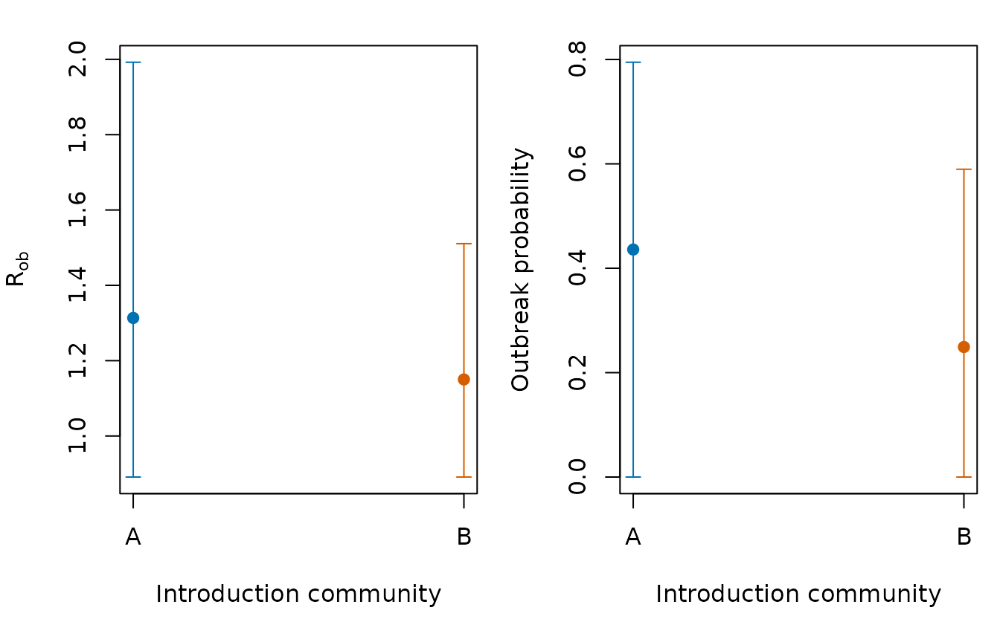

Estimating outbreak reproduction ratios from early transmission data
Source:vignettes/estimating-rob.Rmd
estimating-rob.RmdWhat this model estimates
Routbreak estimates each directed entry of a reproduction matrix from observed transmission links. The likelihood is Poisson and entries have independent Gamma priors. This is an advanced analysis: the data must identify the source and destination community of each transmission and retain transmission generation.
For generation , let count transmissions from source to destination . The sufficient statistics are
where is the number of infectious source- individuals in the previous generation. Rows remain destinations and columns remain sources.
A one-generation example
transmissions <- data.frame(
generation = rep(1L, 4),
source = c("A", "B", "A", "B"),
destination = c("A", "A", "B", "B"),
transmissions = c(12L, 4L, 3L, 16L)
)
initial_cases <- c(A = 10, B = 20)Before fitting, specify a proper Gamma prior in shape-rate form. Here we start from a prior on the total reproduction generated by each source: , with mean 1.25. Equal prior destination weights give each of the two edges shape and the same rate 1.6. Their sum then has the intended total prior.
community <- names(initial_cases)
prior_shape <- matrix(
2 / length(community),
length(community), length(community),
dimnames = list(community, community)
)
prior_rate <- matrix(
1.6,
length(community), length(community),
dimnames = list(community, community)
)
fit <- infer_R(
transmissions,
initial_cases,
prior_shape = prior_shape,
prior_rate = prior_rate
)
fit$S
#> A B
#> A 12 4
#> B 3 16
fit$E
#> A B
#> 10 20
fit$mle
#> A B
#> A 1.2 0.2
#> B 0.3 0.8
fit$posterior_mean
#> A B
#> A 1.1206897 0.2314815
#> B 0.3448276 0.7870370When , the maximum-likelihood estimate is
With a prior, the posterior is
The posterior mean is ; it is not the MLE. The MLE summarizes the likelihood, whereas the posterior combines the likelihood with the stated prior.
Why exposure uses the previous generation
The second observed transmission generation is generated by cases infected in the first, not by cases infected in the second. This shift is visible in a small example.
multi <- data.frame(
generation = c(rep(1L, 4), rep(2L, 4)),
source = rep(c("A", "B", "A", "B"), 2),
destination = rep(c("A", "A", "B", "B"), 2),
transmissions = c(1, 0, 1, 1, 1, 1, 0, 1)
)
multi_fit <- infer_R(
multi,
initial_cases = c(A = 2, B = 1),
prior_shape = prior_shape,
prior_rate = prior_rate
)
multi_fit$infections_by_generation
#> community
#> generation A B
#> 0 2 1
#> 1 1 2
#> 2 2 1
multi_fit$E
#> A B
#> 3 3Generation-zero cases contribute exposure for transmissions in
generation one. Generation-one cases contribute exposure for generation
two. Adding all observed incidence to both S and
E would use the wrong time index.
If S and E have already been constructed
and checked, use
infer_R_sufficient(S, E, prior_shape, prior_rate)
directly.
Why no universal per-edge prior is supplied
The former Gamma(0.001, 0.001) per-edge default had mean
1 and variance 1000 for every matrix entry. With
independent destinations, a source-column total has
so its mean is and variance is . The implied epidemiological scale therefore changes merely because the matrix has more communities.
n_communities <- c(2, 10, 50, 110)
old_shape <- 0.001 * n_communities
old_rate <- 0.001
old_prior <- data.frame(
communities = n_communities,
total_mean = old_shape / old_rate,
total_sd = sqrt(old_shape / old_rate^2),
total_median = qgamma(0.5, old_shape, rate = old_rate),
total_q97.5 = qgamma(0.975, old_shape, rate = old_rate),
probability_total_above_1 = 1 - pgamma(1, old_shape, rate = old_rate)
)
old_prior
#> communities total_mean total_sd total_median total_q97.5
#> 1 2 2 44.72136 1.718044e-148 1.787890e-03
#> 2 10 10 100.00000 4.465535e-28 4.713796e+01
#> 3 50 50 223.60680 5.573878e-04 5.671738e+02
#> 4 110 110 331.66248 1.123185e+00 1.043231e+03
#> probability_total_above_1
#> 1 0.01258648
#> 2 0.06142935
#> 3 0.27282077
#> 4 0.50634260For 2, 10, 50, and 110 communities, the prior means of total
reproduction are 2, 10, 50, and 110. The distributions are also
extremely skewed: for two communities the median is about
,
while for 110 communities the 97.5th percentile exceeds 1000. This is
neither stable across spatial resolution nor generically weakly
informative. Routbreak therefore requires prior_shape and
prior_rate explicitly.
Eliciting a dimension-aware prior
One practical construction starts from a prior for each source total and allocates its Gamma shape across plausible destinations. If and nonnegative weights sum to one within source , set
Independent entries then sum to the intended total distribution. Equal weights are only an illustration; surveillance knowledge, distance, or a pre-specified contact structure may justify unequal weights. Structural zeros should be declared separately rather than approximated with tiny prior means.
Compare plausible total priors on their own scale before fitting:
total_priors <- data.frame(
label = c("Gamma(2, 1.6)", "Gamma(4, 3.2)", "Gamma(8, 6.4)"),
shape = c(2, 4, 8),
rate = c(1.6, 3.2, 6.4)
)
total_priors$mean <- with(total_priors, shape / rate)
total_priors$sd <- with(total_priors, sqrt(shape / rate^2))
total_priors$q025 <- with(total_priors, qgamma(0.025, shape, rate = rate))
total_priors$q975 <- with(total_priors, qgamma(0.975, shape, rate = rate))
total_priors
#> label shape rate mean sd q025 q975
#> 1 Gamma(2, 1.6) 2 1.6 1.25 0.8838835 0.1513808 3.482277
#> 2 Gamma(4, 3.2) 4 3.2 1.25 0.6250000 0.3405829 2.739773
#> 3 Gamma(8, 6.4) 8 6.4 1.25 0.4419417 0.5396613 2.253543These examples share mean 1.25 but express different certainty. None is a universal recommendation; the choice must be justified for the pathogen, time scale, spatial units, and transmission opportunities being modeled.
Propagate posterior uncertainty
estimate_rob() draws complete matrices from the
posterior and applies the same outbreak solver used elsewhere in
Routbreak.
quick <- estimate_rob(
fit,
draws = 200,
seed = 2026,
level = 0.95,
return_draws = TRUE
)
quick$summary
#> community R_ob_median R_ob_lower R_ob_upper outbreak_probability_median
#> A A 1.317646 0.8880354 2.068020 0.4398844
#> B B 1.143805 0.8880354 1.509722 0.2404427
#> outbreak_probability_lower outbreak_probability_upper R_ref_median
#> A 0 0.8143853 1.288297
#> B 0 0.5890697 1.288297
#> R_ref_lower R_ref_upper
#> A 0.8880354 1.970455
#> B 0.8880354 1.970455
quick$diagnostics
#> $tolerance
#> [1] 1e-12
#>
#> $max_iterations
#> [1] 100000
#>
#> $failure_fraction
#> [1] 0
#>
#> $gamma_underflow_replacements
#> [1] 0
#>
#> $convergence
#> [1] "Every successful draw satisfied the fixed-point residual check implemented by outbreak_prob()."Two hundred draws keep this example fast; they are not enough for stable publication-quality 2.5% and 97.5% tail quantiles. Increase the draw count and verify that reported quantiles are stable across seeds or larger samples.
posterior <- estimate_rob(
fit,
draws = 2000,
seed = 2026,
level = 0.95,
return_draws = TRUE
)
summary <- posterior$summary
colors <- c("#0072B2", "#D55E00")
old_par <- par(mfrow = c(1, 2), mar = c(5.2, 4.2, 1.6, 0.8))
x <- seq_len(nrow(summary))
plot(
x, summary$R_ob_median,
ylim = range(summary$R_ob_lower, summary$R_ob_upper),
xaxt = "n", xlab = "Introduction community", ylab = expression(R[ob]),
pch = 19, col = colors
)
arrows(x, summary$R_ob_lower, x, summary$R_ob_upper,
angle = 90, code = 3, length = 0.05, col = colors)
axis(1, at = x, labels = summary$community)
plot(
x, summary$outbreak_probability_median,
ylim = c(0, max(summary$outbreak_probability_upper)),
xaxt = "n", xlab = "Introduction community",
ylab = "Outbreak probability", pch = 19, col = colors
)
arrows(x, summary$outbreak_probability_lower,
x, summary$outbreak_probability_upper,
angle = 90, code = 3, length = 0.05, col = colors)
axis(1, at = x, labels = summary$community)
Posterior medians and 95% credible intervals for outbreak reproduction ratios and outbreak probabilities. Intervals summarize posterior uncertainty; finite simulation adds Monte Carlo error.
par(old_par)The intervals are Bayesian credible intervals: conditional on the model, prior, and observations, they contain the stated posterior probability. They are not frequentist confidence intervals. Because they are estimated from a finite random sample, their endpoints also have Monte Carlo uncertainty.
Some posterior matrices can be subcritical. In a primitive
irreducible Poisson draw, all outbreak probabilities are then exactly
zero and the published continuation sets every R_ob equal
to that draw’s R_ref.
colMeans(posterior$outbreak_probability_draws == 0)
#> A B
#> 0.101 0.101If enough lower-tail draws are subcritical, empirical lower quantiles
of R_ob and R_ref can coincide. This is a
consequence of the published continuation applied draw by draw, not a
rounding shortcut.
Structural zeros and unidentified entries
An observed zero is not automatically a structural zero. Use
structural_zero only for an edge ruled out by design or
substantive knowledge. Such entries remain exactly zero in posterior
draws. If a source has zero exposure, its non-structural MLE entries are
NA and their status is "unidentified"; a
proper explicit prior still defines a posterior, whose interpretation is
then almost entirely prior-driven.
Assumptions and limitations
- Transmission links and generations must be observed; aggregate case counts alone do not identify every directed entry.
- Conditional transmission counts are independent Poisson observations. The overdispersion tutorial changes the branching offspring model, not this likelihood.
- Matrix entries have independent proper Gamma priors. Dependence, hierarchical pooling, and covariate models are not implemented.
- Posterior sampling uses independent Gamma draws, not MCMC. Failed outbreak calculations and numerical Gamma underflows are reported in diagnostics.
- The paper’s Canadian analysis fixed a structured matrix and inferred a scalar in using a different model. Routbreak’s independent-entry inference does not reproduce that Stan analysis.
The estimator and sufficient statistics follow Wang B and Valdano E (2026), PLOS Computational Biology 22(7): e1014425. https://doi.org/10.1371/journal.pcbi.1014425